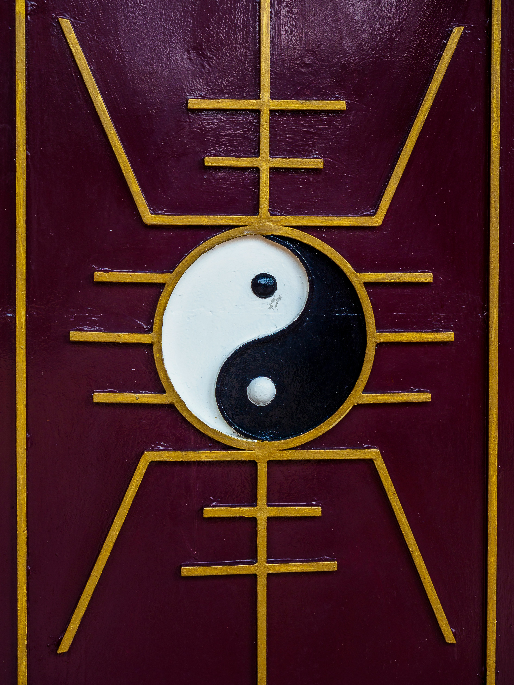
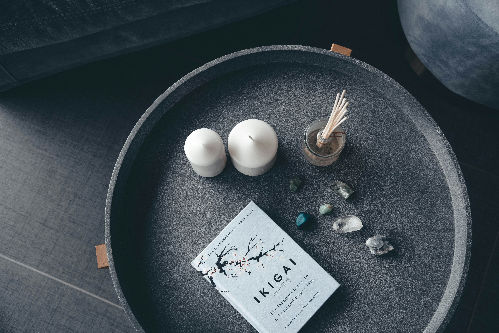

Photo Gallery
A collection of photographs arranged in a responsive gallery.
View galleryA selection of pages and work from my web development practice.

A collection of photographs arranged in a responsive gallery.
View gallery
A magazine-style article featuring a responsive sidebar layout.
Read article
A contact page with ways to reach the studio and find it online.
View contact page